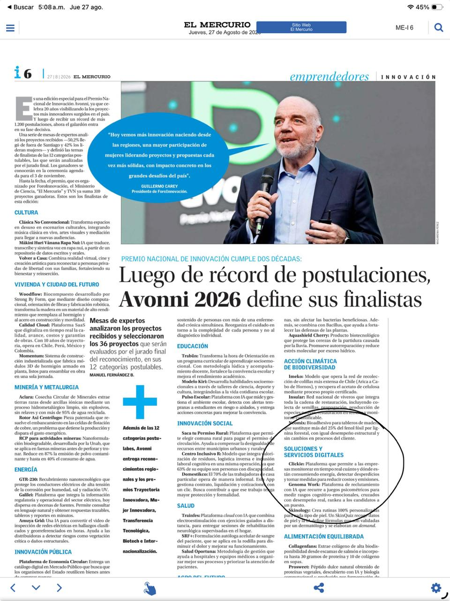

Clickie es finalista del Premio Nacional de Innovación Avonni 2026
Clickie fue seleccionado como finalista del Premio Nacional de Innovación Avonni 2026 por su propuesta para transformar datos energéticos en acciones concretas.
Leer más →
Tu sistema HVAC no está roto: está gastando el doble para ocultar que perdió el control
La mayor parte de los sobrecostos HVAC no nace en una falla del equipo, sino en la pérdida de gobernanza sobre horarios, setpoints y desvíos operativos.
Leer más →
Sin revisión mensual activa, tu sistema de gestión energética genera reportes, pero no ahorros
Acumular datos energéticos sin revisión mensual activa solo genera reportes presentables. El ahorro real aparece cuando hay análisis, priorización e intervención humana.
Leer más →
Tu presupuesto energético no es un bloque fijo: por qué romper la estimación lineal evita sorpresas
Tratar la energía como un costo fijo debilita cualquier presupuesto. Descubre cómo modelarla por capas para evitar desvíos y proteger margen.
Leer más →
Benchmark energético multisucursal: cómo segmentar la red sin castigar al local equivocado
Un benchmark útil no compara sucursales en bruto: segmenta la red para priorizar presupuesto, mantenimiento y CAPEX donde realmente importa.
Leer más →
El alza de julio carga el 84% al sector comercial: ¿está tu operación lista?
Julio concentra los mayores cambios tarifarios del año para el sector comercial. Entiende qué está subiendo y cómo prepararte con datos por local.
Leer más →
ESG con datos reales: por qué una factura no alcanza para reportar energía, agua y gas
Un buen reporte ESG necesita trazabilidad real, no solo consolidación de facturas. Descubre cómo mejorar la calidad del dato energético e hídrico.
Leer más →
Qué hacen distinto los líderes en sostenibilidad
Un estudio de Boston Consulting Group muestra qué tienen en común las empresas que avanzan mejor en sostenibilidad y crecimiento.
Leer más →
Equipos que funcionan, pero ya están fallando: lo que la curva de energía detecta antes del service
La curva de energía puede anticipar fallas antes del service. Aprende a detectar desvíos tempranos y a intervenir antes de una avería mayor.
Leer más →
Prorrateos con baja visibilidad: cómo identificar desvíos energéticos en locales dentro de centros comerciales
Operar dentro de un mall puede ocultar sobrecostos eléctricos. Aprende a detectar desvíos y a auditar prorrateos con mejor criterio energético.
Leer más →
Cómo saber si tu tarifa eléctrica dejó de calzar con tu operación
Tu tarifa eléctrica puede dejar de ser conveniente sin que nadie lo note. Revisa cómo detectar cuando el contrato ya no calza con tu operación.
Leer más →
Consumo nocturno en retail multisucursal: el costo que sigue corriendo cuando el local ya cerró
El consumo nocturno puede esconder una fuga estructural en cadenas multisucursal. Aprende a leer la noche como una línea base de control.
Leer más →
Benchmark energético en retail: por qué no todos los locales deberían medirse igual
Comparar consumo sin contexto puede distorsionar cualquier programa de eficiencia. Descubre cómo construir benchmarks útiles por formato de tienda.
Leer más →
Verdantix Smart Innovators 2025: qué cambió en el EMS moderno
El EMS moderno dejó de ser un dashboard. Revisa qué cambió en 2025 según Verdantix y cómo evaluar plataformas con criterio operativo.
Leer más →
Los 4 errores que esconde una factura eléctrica de retail
En retail, los errores de facturación no escalan de forma lineal: se multiplican por sucursal. Aprende qué revisar antes de seguir pagando de más.
Leer más →
Cómo prepararte para el alza tarifaria de julio de 2026: impacto del 10% en retailers multisucursal
El alza tarifaria de julio 2026 impactará fuertemente a los retailers multisucursal, con aumentos reales de hasta el 10%. Descubre cómo prepararte.
Leer más →
Cómo las tarifas eléctricas impactan tu operación diaria (y qué hacer para pagar menos)
Las tarifas eléctricas afectan el costo operativo más de lo visible. Revisa cómo leer su impacto y qué ajustes ayudan a pagar menos.
Leer más →
Optimiza tu operación diaria: cada decisión energética cuenta
La energía está en cada decisión diaria del local. Descubre cómo ganar visibilidad, reaccionar antes y reducir ineficiencias repetidas.
Leer más →
El problema no es el consumo energético en retail. Es la falta de decisiones
La energía dejó de ser un costo fijo en retail. Aprende por qué el problema no es solo cuánto consumes, sino cómo decides con esa información.
Leer más →¿Qué va a pasar con tu factura eléctrica en 2026?
Tu factura eléctrica en 2026 tendrá dos mitades muy distintas. Revisa qué cambia durante el año y cómo prepararte antes de julio.
Leer más →
Remarcación y Submetering: lo que no mides, lo subsidias
Descubre cómo la remarcación y el submetering permiten a las empresas identificar ineficiencias, asignar costos reales y optimizar su consumo.
Leer más →
Supermercados 24/7: el margen se protege gestionando la energía
En supermercados, la energía es uno de los principales costos operativos. Descubre cómo la visibilidad energética protege la rentabilidad.
Leer más →
El costo invisible del confort en tiendas por departamento
Las grandes superficies son un campo de batalla para la rentabilidad. Descubre cómo la energía consume tus ganancias y cómo gestionarla.
Leer más →
¿Sabías que 1°C puede definir la rentabilidad de tu tienda este verano?
La climatización puede representar entre el 40% y 60% del consumo total. Un ajuste de 1°C puede significar hasta un 8% de ahorro.
Leer más →
Starbucks ahorra energía junto a Clickie
Conoce cómo Starbucks transformó su consumo energético en ahorro real con monitoreo en tiempo real y acompañamiento de Clickie.
Leer más →
La transición energética como oportunidad de crecimiento
La transición energética ya no es solo una meta ambiental: se ha convertido en una palanca de valor para las empresas.
Leer más →
Paso a paso: ¿Cómo ayuda Clickie a las empresas a gestionar mejor su energía?
Descubre el proceso completo de gestión energética con Clickie: monitoreo en tiempo real, identificación de ahorros y acciones concretas.
Leer más →
Clickie en El Mercurio: startup que permite ahorrar hasta 20% en la cuenta de la luz
El Mercurio destaca a Clickie como la startup que ayuda a las empresas a ahorrar hasta un 20% en su cuenta de electricidad.
Leer más →
Cómo La Araucana redujo su huella de carbono un 14% con Clickie
La Araucana implementó monitoreo inteligente con Clickie y logró reducir su huella de carbono un 14%, superando su meta del 10%.
Leer más →
Cómo en Clickie convertimos datos en ahorros de energía
Los datos por sí solos no sirven. Descubre cómo Clickie transforma millones de datos en acciones concretas que generan ahorros reales.
Leer más →
Transformar datos en ahorros: así reduces tus costos energéticos
Los datos energéticos solo generan valor cuando se convierten en decisiones. Descubre cómo pasar de medición a ahorro real.
Leer más →
¿Qué significa una inflación energética de 0% para las empresas en América Latina?
Inflación energética en 0%: descubre su impacto en empresas de América Latina y cómo aprovechar esta estabilidad para mejorar la eficiencia energética.
Leer más →
Cómo Grupo Tattersall logró eficiencia energética con Clickie: un caso de éxito en sostenibilidad
Grupo Tattersall optimizó su eficiencia energética con Clickie, logrando una significativa reducción de costos y mejorando la sostenibilidad en sus operaciones diversificadas.
Leer más →
Así monitoreamos la energía en la industria: ¿Qué son los gemelos digitales?
Optimiza el uso de energía en tu planta industrial con gemelos digitales y tableros inteligentes. Descubre cómo Clickie mejora la eficiencia operativa y reduce la huella de carbono.
Leer más →
¿Cómo se logran ahorros reales en locales como OXXO? Monitoreo de Energía en Retail
Descubre cómo OXXO optimiza su consumo eléctrico en Chile con Clickie, a través del monitoreo y control de energía en tiempo real. Ahorros reales y eficiencia energética para el retail.
Leer más →
Caso de éxito: Cómo OXXO gestiona la energía de más de 230 tiendas en Chile con Clickie
Caso de éxito: Monitoreo de Energía en Empresas de Chile. OXXO optimiza la energía de más de 230 tiendas en Chile con Clickie, logrando eficiencia y sostenibilidad a través de un monitoreo personalizado.
Leer más →
Clickie en la Feria del Medio Ambiente de Vulco: tecnología, sostenibilidad y trabajo conjunto
Clickie participa en la Feria del Medio Ambiente de Vulco, mostrando cómo su tecnología mejora la eficiencia y sostenibilidad en la gestión energética.
Leer más →
Energía, datos y futuro: Clickie visitó la Expo Osaka 2025
Descubre cómo la Expo Osaka 2025 está moldeando el futuro de la energía y la sostenibilidad con innovaciones de China, Arabia Saudita y Japón.
Leer más →
Mide lo que realmente importa: Optimización, datos y eficiencia al alcance de tu línea de producción
Optimiza tu producción midiendo indicadores clave como OPI-NONA y OEE para mejorar eficiencia, reducir costos y tomar decisiones rápidas basadas en datos reales.
Leer más →
¿Sabías que puedes usar tus datos del Coordinador Eléctrico en la Plataforma Clickie?
Integra automáticamente tus datos del Coordinador Eléctrico Nacional a Clickie y optimiza tu gestión energética sin complicaciones.
Leer más →
¿Sabes cuánto impacto positivo está generando tu empresa?
Descubre cómo medir el impacto positivo de tu ahorro energético traducido en CO2 evitado, árboles salvados y más, impulsando tu estrategia de sostenibilidad.
Leer más →
¿Tienes datos de tu consumo de energía? Ahora úsalos para tomar decisiones reales
Optimiza tu consumo energético usando datos reales. Aprende a detectar patrones, tomar decisiones informadas y mejorar continuamente con la ayuda de Clickie.
Leer más →
¿Cómo preparar tu tienda para ahorrar energía este invierno?
Descubre cómo reducir costos de energía en tu tienda este invierno con estrategias prácticas para calefacción eficiente y aprovechamiento de la luz natural. Mejora tu gestión energética hoy mismo.
Leer más →
Nuevo aumento en el precio de la electricidad a partir de julio de 2025
Nuevo aumento en tarifas eléctricas en julio de 2025. Clickie te ayuda a optimizar tu consumo energético y reducir costos.
Leer más →
La energía dejó de ser un gasto. Conoce cómo la Energy Cloud te hace ganar control y eficiencia.
Descubre cómo la Energy Cloud transforma la industria energética, empoderando a los usuarios y optimizando el consumo mediante tecnologías avanzadas y energías renovables.
Leer más →
Los impulsores del cambio energético: clientes más exigentes, datos más valiosos y un sistema más descentralizado
Transformación energética: consumidores informados, datos valiosos y sistemas descentralizados redefinen el sector. ¿Está tu empresa preparada para liderar este cambio? Descubrí más en nuestro blog.
Leer más →
Primer trimestre del año: ¿Cómo medir y mejorar tu gestión energética?
Análisis trimestral de gestión energética: mide tu consumo, reduce costos y mejora la eficiencia de tu empresa con estrategias efectivas y herramientas como Clickie.
Leer más →
La Hora del Planeta: Más que apagar las luces
Descubre cómo transformar el gesto simbólico de La Hora del Planeta en hábitos diarios de eficiencia energética en tu empresa con medidas prácticas y sostenibles.
Leer más →
Cómo ahorrar energía en tu tienda y reducir costos operativos
Optimiza el consumo energético en tu tienda con estrategias simples para reducir costos operativos y contribuir al cuidado del medioambiente. Descubre cómo ahorrar energía de manera efectiva.
Leer más →
Monitoreo de Agua para un Reciclado Eficiente y Cumplimiento con la DGA
Soluciones tecnológicas para el monitoreo y transmisión de extracciones de agua subterránea, asegurando el cumplimiento de la normativa DGA y promoviendo la sostenibilidad hídrica.
Leer más →
Entrevista a Marcelo Llévenes, CEO de Clickie
Entrevista con Marcelo Llévenes sobre cómo las nuevas tecnologías y la sostenibilidad están transformando el sector energético, empoderando a los consumidores y modernizando la regulación.
Leer más →
Día Mundial del Ahorro de Energía: Cómo tu empresa puede hacer la diferencia
El 21 de octubre es el Día Mundial del Ahorro de Energía. Descubre cómo pequeñas acciones y soluciones como las de Clickie pueden optimizar el consumo energético de tu empresa, reducir costos y contribuir a un futuro sostenible.
Leer más →
5 Niveles de Madurez en la Gestión Energética
Descubre los cinco niveles de madurez en la gestión energética y cómo optimizar recursos y reducir costos en tu empresa de manera eficiente y sostenible.
Leer más →
5 Errores Comunes en la Gestión Energética y Cómo Solucionarlos
Descubre los errores comunes en la gestión energética y cómo solucionarlos para optimizar el consumo y reducir costos con la ayuda de Clickie.
Leer más →
El Rol del Gestor Energético: Clave para la Eficiencia y Sostenibilidad Empresarial
Conoce por qué el rol del gestor energético es clave para reducir desperdicios, mejorar eficiencia y sostener una estrategia empresarial responsable.
Leer más →
Piloto de Avión y No Médico Forense: La Diferencia de Hacer Gestión Energética con Datos Pasados vs. Datos en Línea
Una comparación clara entre gestión reactiva y monitoreo en tiempo real para entender por qué los datos en línea cambian la toma de decisiones.
Leer más →
Potencia tu Empresa con Clickie: Una Solución Integral para la Gestión Energética
Descubre cómo una solución integral de gestión energética ayuda a mejorar operaciones, mantenimiento, finanzas y sostenibilidad en una sola plataforma.
Leer más →Edificios Verdes y Monitoreo de Energía con Clickie
Explora cómo los edificios verdes y el monitoreo energético ayudan a reducir costos operativos, mejorar eficiencia y acelerar la transición sostenible.
Leer más →
El Impacto del Aumento de Tarifas de Energía Eléctrica en Chile
Analiza cómo el aumento de tarifas eléctricas en Chile impacta la operación de las empresas y qué acciones ayudan a absorber mejor el cambio.
Leer más →
Edificios: Una Oportunidad para Reducir la Demanda Energética Global
Descubre cómo la gestión energética digitalizada y mejoras en edificios pueden reducir consumo, costos y emisiones en operaciones complejas.
Leer más →